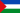

Puntarenas
PuntarenasActualmente la organización territorial comprende de 7 provincias, 84 cantones y 488 distritos. La División Territorial
Administrativa de la República define con fundamento en las leyes, decretos, acuerdos tomados por la Comisión
Nacional de la División Administrativa y situaciones de hecho la demarcación de estos territorios. El decreto más actual
de la misma corresponde al N°41548-MGP del 28 de enero de 2019.
Con la instauración de la república y la declaración de Costa Rica como República
libre, soberana e independiente, se aprobó la Constitución Política de 1848 el 30
de noviembre de ese año, y según la Ley n.º 36 del 7 de diciembre de 1848, se estableció
por primera vez las denominaciones de provincia, cantón y distrito. Según la
mencionada ley, se crearon las provincias de:
El decreto n.º 27 del 6 de junio de 1870 creó la comarca de Limón, a partir del territorio más oriental de la Provincia de
Cartago, y permitió el establecimiento de un ayuntamiento. No sería hasta 1902, bajo el decreto legislativo n.º 59 del 1
de agosto que se constituyó en la séptima y última de las provincias que comprende el territorio nacional.
De 1848 a 2022 la cifra de cantones en el país ha pasado de 10 a 84. El último cantón en ser constituido es el de Puerto
Jiménez (antiguo distrito de Golfito en la provincia de Puntarenas). Los distritos, por su parte, han experimentado mayor
flexibilidad en su proceso de constitución, por lo que su número cambia constantemente. Por ejemplo, en la actualidad
se tienen 488 distritos, cuando en el año 2000, al realizarse el censo de población los distritos eran 463.
Política y administrativamente, Costa Rica está conformada por 7 provincias:
| Provincia | Código ISO | Capital | Cantones | Distritos | Población (2023) | Superficie (km2) |
|---|---|---|---|---|---|---|
| San José | SJ | San José | 20 | 123 | 1 696 265 | 4965,90 |
| Alajuela | A | Alajuela | 16 | 116 | 1 068 258 | 9757,53 |
| Cartago | C | Cartago | 8 | 51 | 550 655 | 3124,67 |
| Heredia | H | Heredia | 10 | 47 | 546 139 | 2656,99 |
| Guanacaste | G | Liberia | 11 | 61 | 410 055 | 10 140,71 |
| Puntarenas |
P | Puntarenas | 13 | 60 | 516 326 | 11 265,69 |
| Limón | L | Limón | 6 | 30 | 474 527 | 9188,52 |